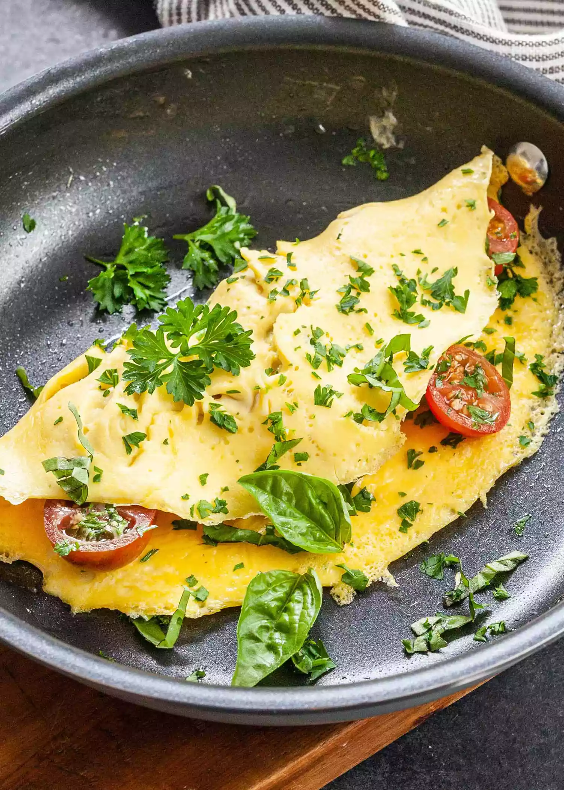

Omelette

Not only is an omelette quick and easy to make, it is a paragon of
economy. Odds and ends (a.k.a. leftovers) rise to a new level when
placed inside an omelette.
Leftover, cooked vegetables paired with a little cheese and
folded into eggs present a much more cheerful meal than a bowl
of vegetables haphazardly reheated in the microwave!
Ingredients:
- 2 large eggs
- 1 Tbsp. unsalted butter
- 2 Tbsp. grated cheese (any kind)
- 3 to 4 cherry tomatoes, sliced in half and lightly salted
- 2 Tbsp. chopped basil, parsley, or other herbs
Steps:>
- Prep the eggs:
In a bowl, beat the eggs with a fork.
- Melt the butter:
In an 8-inch nonstick skillet over medium-low heat, melt the butter.
- Add the eggs and cook the omelette:Add the eggs to the skillet and cook without stirring until the
edges begin to set. With a silicone spatula, push the edges toward the center of the pan and tilt the pan so the
uncooked eggs move to the edge. Repeat until the eggs are somewhat set but still a little soft in the center, about 6 minutes.

- Fill the omelette:Place the cheese, tomatoes, and herbs in a line down the center of the omelette and cook for about
1 minute longer, or until the eggs are mostly set but still a little soft in the center.
- Fold and plate the omelette:Slide the spatula around one side of the omelette at the edge to loosen it. Slip it under
the eggs, and use it to carefully fold the omelette in half. Slide the spatula under the folded omelette to loosen it from the pan.
Tilt the pan over a plate and use the spatula to nudge it onto the plate. Voila!

Home